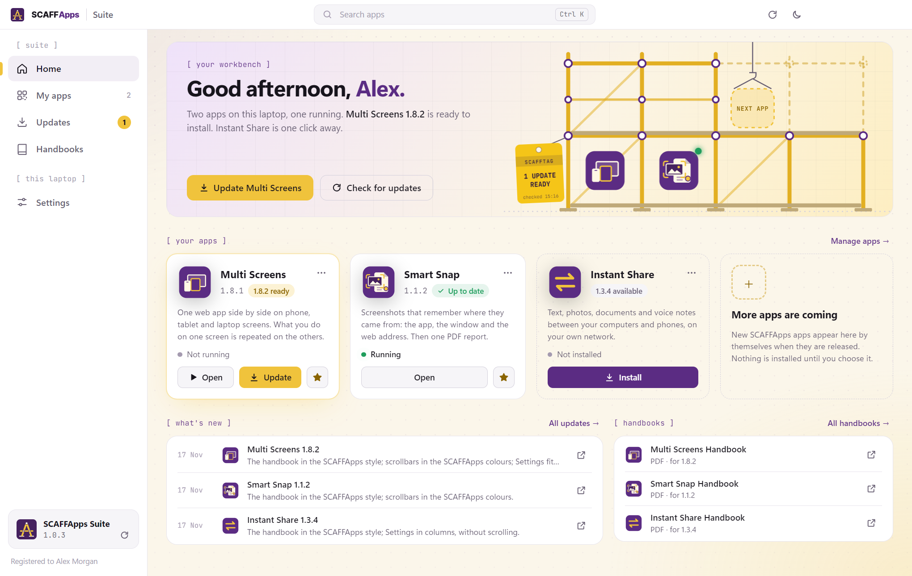
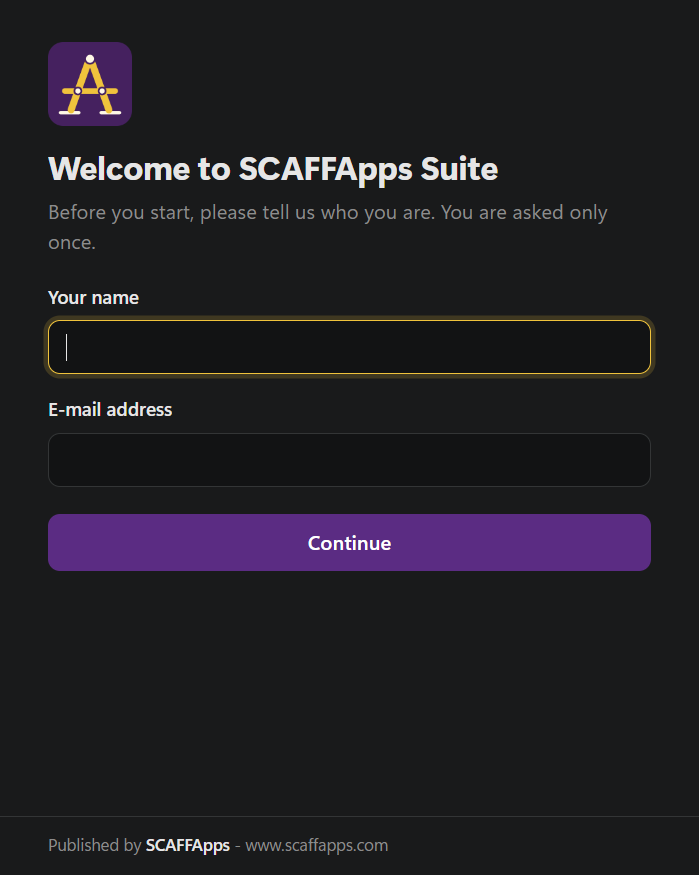
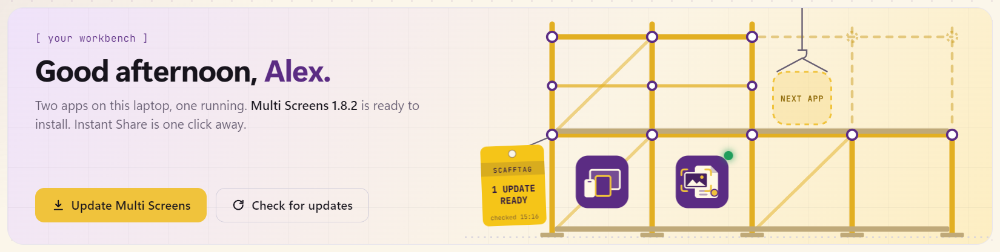
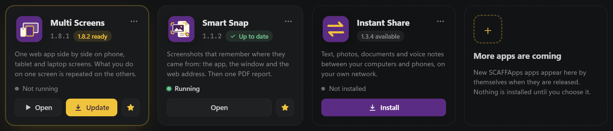
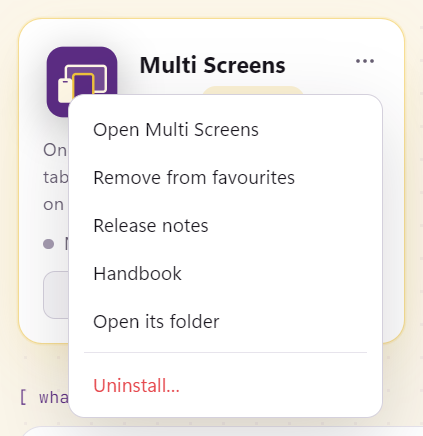
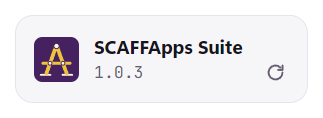
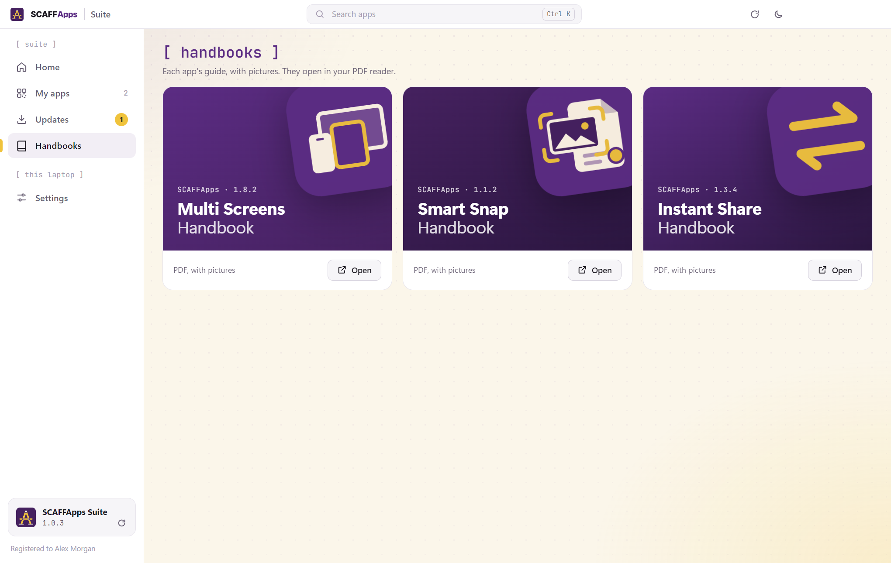
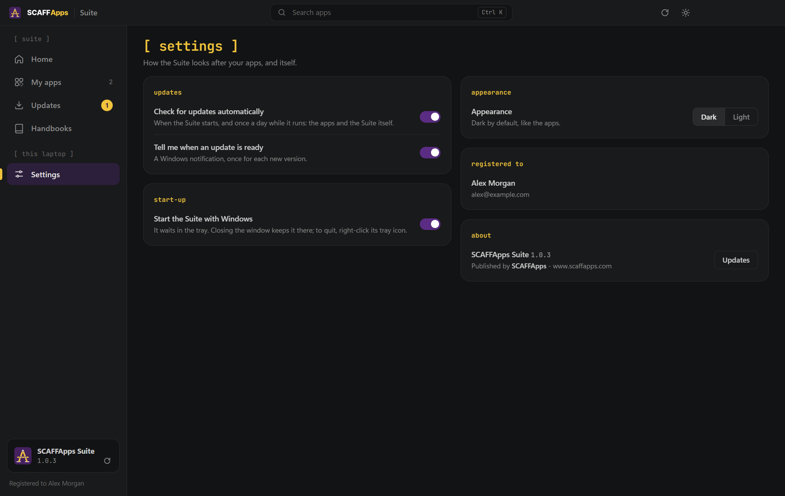

The SCAFFApps Suite is one window for every SCAFFApps app. It shows which apps you have and which you do not, installs them, opens them, and keeps them up to date: you never have to look for a new version yourself.
Every download is checked twice before anything is installed, against the checksum GitHub works out for the file and the one published in its release notes. If they do not agree, nothing happens.
The Suite opens each app's handbook, like this one, and keeps itself up to date the same way. It waits in the tray, starts with Windows if you like, and tells you when an update is ready.
New SCAFFApps apps appear in it by themselves, without updating the Suite.
The SCAFFApps team

The light appearance: the sun or moon button in the title bar switches it.
SCAFFApps Suite handbook · Version 1.0
INSTALL
Chapter 01 · Getting started
Install it once. It does the rest.
One installer, for 64-bit Windows 10 and 11. The Suite installs for everyone on the computer, beside the apps it looks after, with its shortcut in the Start menu's SCAFFApps folder.
DownloadSCAFFApps-Suite-Setup-1.0.x.exe from its Releases page.
InstallWindows asks for permission once.
Your name, onceName and e-mail, both required. The Suite and every SCAFFApps app on the Windows account share them.
It waits in the trayClosing the window keeps it there, ready to tell you about updates.

The first start: your name and e-mail address, asked once on each Windows account.
The first start
The first SCAFFApps app to start on a Windows account asks for your name and e-mail address. Both are required: closing the window without them closes the app. You are asked once; the Suite and the other SCAFFApps apps use the same details. What is sent, and to whom, is in the last chapter.
In the tray
The Suite waits in the tray, by the clock, and can start with Windows, hidden (Settings). Click its icon to open the window; right-click it for the menu, which also has Quit.
Good to know
"Windows protected your PC" may show the first time: the installer is not code-signed. Choose More info, then Run anyway.
Check a download: the release notes list the installer's SHA-256, for Get-FileHash in PowerShell.
Remove it from Windows Settings, Apps, like any program. The apps stay.
SCAFFApps Suite handbook · Install and start
WINDOW
Chapter 02 · The window at a glance
Five views. One sidebar.
The sidebar leads to the five views, with the number of updates waiting; at its foot, the Suite's own card shows its version and says when an update for the Suite itself is ready.
The home view, with an update ready for Multi Screens, Smart Snap up to date and Instant Share not yet installed.
View
What it shows
Home
The scaffold, with each favourite app in its own bay; a card for every app; what's new and the handbooks (next chapter).
My apps
Every SCAFFApps app, its version, and whether it is running.
Updates
The Suite itself and each app: the version you have, the newest one, and its release notes.
Handbooks
Each app's handbook, a PDF with pictures.
Settings
Update checks, notifications, starting with Windows, the appearance, and who it is registered to.
The sun or moon button in the title bar switches between dark and light; Ctrl + K searches the apps.
SCAFFApps Suite handbook · The window at a glance
HOME
Chapter 03 · The home view
Your favourites on the scaffold.
The scaffold shows your favourite apps, each in its own bay. The star beside an installed app's Open makes it a favourite or takes it off; until you change one, every installed app is a favourite. The tag on the scaffold says whether updates are ready, and the button beside it updates them.

The scaffold: each favourite in its bay; the tag says one update is ready, and Update Multi Screens does it.

A card for every app: Open, and the star that puts it on the scaffold; Update when a newer version is out (its version in gold); Install when it is not on this computer. The last card keeps a place for the apps still to come.

The ⋯ menu on a card.
In the ⋯ menu
What it does
Open
Opens the app (Install, when it is not installed).
Add to favourites
Puts it on the scaffold (Remove from favourites takes it off).
Release notes
The app's newest release, on GitHub.
Handbook
Opens its handbook.
Open its folder
Shows where the app is.
Uninstall…
Removes it, after asking; Windows asks for permission.
Under the cards
What's new lists each app's latest release, with its first line.
Handbooks opens each app's guide.
SCAFFApps Suite handbook · The home view
APPS
Chapter 04 · Installing and updating apps
Checked twice. Then installed.
Install or Update downloads the app's installer from its GitHub Releases page, checks it, and installs it, without the installer's pages. The app's own settings and saved files are kept.
Downloaded and checkedAgainst two published SHA-256 checksums: GitHub's own for the file, and the one in the release notes. They must agree.
Closed, if openThe app is closed first; its card says so.
InstalledWindows asks for permission. The app goes beside the others, with its shortcut in the Start menu's SCAFFApps folder.
Opened againIf it was open, it opens again, now the new version.
Update Multi Screens, by the scaffold; Update on its card does the same. (The light appearance.)
A file that does not match
is thrown away, and nothing is installed. The card says why. Try again later; if it keeps happening, tell SCAFFApps.
Update all
On the updates view, it updates every app with an update, one after another. Each app can also update itself from its own Settings: the Suite and the app use the same release files.
SCAFFApps Suite handbook · Installing and updating apps
UPDATE
Chapter 05 · Updates, and the Suite's own
Always the newest. The Suite too.
The Suite checks the apps' Releases pages, and its own, when it starts and once a day while it runs. A Windows notification says so once when an update is ready.
The updates view: the Suite itself on top, then each app, with the version you have, the newest one and its notes. The versions shown are an example.

The Suite's card, at the foot of the sidebar.
The Suite says soIts card and the updates view show the new version.
UpdateDownloads it and checks it the same way. Windows asks for permission.
In placeThe Suite closes, the new version is installed in the same folder, and it opens again.
SCAFFApps Suite handbook · Updates, and the Suite's own
BOOKS
Chapter 06 · Handbooks
Every app's guide. One click away.
Each SCAFFApps app has a handbook like this one: a PDF with pictures, published with each version of the app.

The handbooks view: one for each app, with the version it describes.
Open
Downloads it the first time, checks it like an installer, and opens it in your PDF reader.
From a card
⋯ > Handbook on an app's card does the same, and so does the Handbooks list on the home view.
Always the right one
The handbook comes with each release, so it describes the newest version.
SCAFFApps Suite handbook · Handbooks
SETTINGS
Chapter 07 · Settings
A few switches. That is all.
How the Suite looks after your apps, and itself.

Settings, with who the Suite is registered to.
Setting
What it does
Check for updates automatically
When the Suite starts and once a day while it runs. Off: only when you press Check for updates.
Tell me when an update is ready
A Windows notification, once for each new version, when the window is not in front.
Start the Suite with Windows
It starts hidden, in the tray. Closing the window keeps it there; to quit, right-click the tray icon.
Appearance
Dark (the usual one) or light.
Registered to
The name and e-mail address you gave.
SCAFFApps Suite handbook · Settings
HELP
Chapter 08 · What is sent, and help
Nothing hidden. The fixes.
Your registration
Once for each version of each SCAFFApps app: your name, e-mail address, a random number made for this Windows account, the app's name and version, and the Windows version, to SCAFFApps (www.scaffapps.com). Nothing else about you or the computer.
Update checks
Ordinary web requests to GitHub for each app's latest release and for the list of SCAFFApps apps, naming the Suite and its version.
Downloads
Installers and handbooks come from GitHub, each checked against its published checksums before it is used.
If something is not right
What you see
What to do
"Windows protected your PC"
Choose More info, then Run anyway. The installer is not code-signed.
"Windows did not get permission"
Choose the button again, and answer Yes when Windows asks.
"… did not match its published checksum"
Nothing was installed. Try again later; if it keeps happening, tell SCAFFApps.
"GitHub is limiting how often it can be asked"
Try again in an hour.
"GitHub could not be reached"
Check the internet connection, and try again.
An app has no installer yet
Its card offers its release page instead.
An installed app is not shown
The Suite finds apps in Windows' list of installed programs. Install it again from its card.
The Suite is not in the tray
Open it from the Start menu's SCAFFApps folder; turn on Start the Suite with Windows in Settings.
Your version, on the Suite's card at the foot of the sidebar; the arrow checks for updates.
Need a hand?
Write to info@scaffapps.com with what you see and what you expected.
Say which version you have: the Suite's card, at the foot of the sidebar.
Quicker
Ctrl + K searches the apps.
Check for updates, at the top, asks GitHub straight away.
SCAFFApps Suite handbook · What is sent, and help
SCAFFApps/SCAFFApps Suite·Published by SCAFFApps
Useful apps
for every laptop.
The SCAFFApps Suite looks after every SCAFFApps app: small, focused tools for people who work on a laptop all day. Each installs in a moment and keeps itself up to date.
Multi Screens
Smart Snap
Instant Share
SCAFFApps Suite
+And more to come
Every app, in one window.
The SCAFFApps Suite installs, opens and updates them all, and updates itself: one place to see which version you have and what is new. Get it, and every app, from github.com/Rady193.
 Multi Screens
Multi Screens Smart Snap
Smart Snap Instant Share
Instant Share SCAFFApps Suite
SCAFFApps Suite